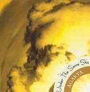

| Artist: | Agarta |
| Title: | Under The Same Sky |
| Label: | Starless Records STR03 |
| Length(s): | 41 minutes |
| Year(s) of release: | 2003 |
| Month of review: | [10/2005] |
| 1) | Under The Same Sky | 9.04 |
| 2) | Seven Yards! | 5.14 |
| 3) | Play On Words | 6.41 |
| 4) | State Of Weightlessness | 5.42 |
| 5) | The Autumn Garden | 4.57 |
| 6) | Rain Architecture | 5.28 |
| 7) | Detonator Of The Genius | 2.04 |
| 8) | Loneliness | 1.24 |
Seven Yards! opens with nylon string guitar. I do can hear some elements of Gordian Knot, although the music does come out a bit less flashy than on GKs debut. But the band can rock, although the song could do with a bit of fluency in the transitions. The middle part is meander time, with the guitar doing the ethereal talking. The use of the rhythm guitar reveals a seventies tendency. The melodies are generally quite merry here, playful even, and yes we are still within the jazzrock vocabulary. Play On Words on the other hand opens with playful drums. More and more I get a typical jazzrock feel with the songs on this album. But then the guitarist switches to a happy tune played in the vein of King Crimson's Discipline. But it is mainly the sound that is used. For the rest, this is relatively safe and bouncy jazzrock. In the middle, the song gets a bit more urgency and fire. I guess the friendly keyboards I hear around two thirds down the track is the guitar synth.
State Of Weightlessness opens ethereally, and is thus quite a change from its frolic predecessor. The mysterious melodies are good here and the arrangement is also quite nice with the rolling drums and I detect some percussive sounding guitar in the back. Then the lead guitar takes over, meandering in what I would call an Arabic fashion. The song also reveals that soundwise things could be improved. The percussion lies too much on top of the music, the higher pitched parts of these I mean. The song has an early Patrick O'Hearn feel.
The Autumn Garden is more like Spring Garden with its Metheny style happy sounding acoustic guitar. The bass leads together with the acoustic guitar. The only vocals (on this album) are wordless and fit in well with the laid back jazzy feel.
Rain Architecture is a distinctive opener: with a bass solo no less. This sounds really very original. The song is of course mainly a jazzrock track, but one with distinction, because the bass continues to have a repetitive influence. Interesting. And nice too.
Detonator Of The Genius and its follow-up and closer Loneliness are relatively short sound excursions. Detonator adds to the atmosphere with its typical modern KC and quite a bit of angst and avantgarde, while Loneliness is a flute only tune.